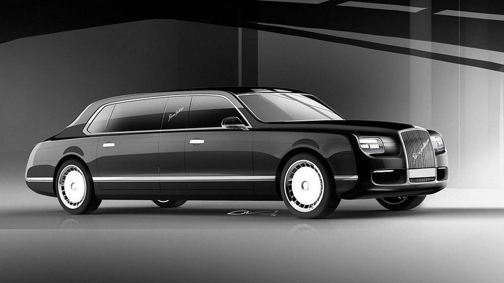
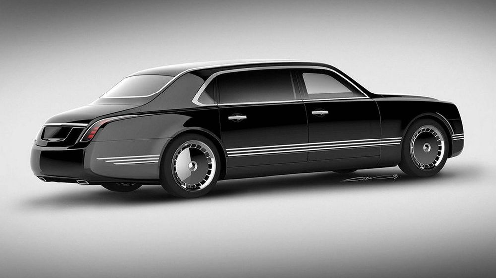
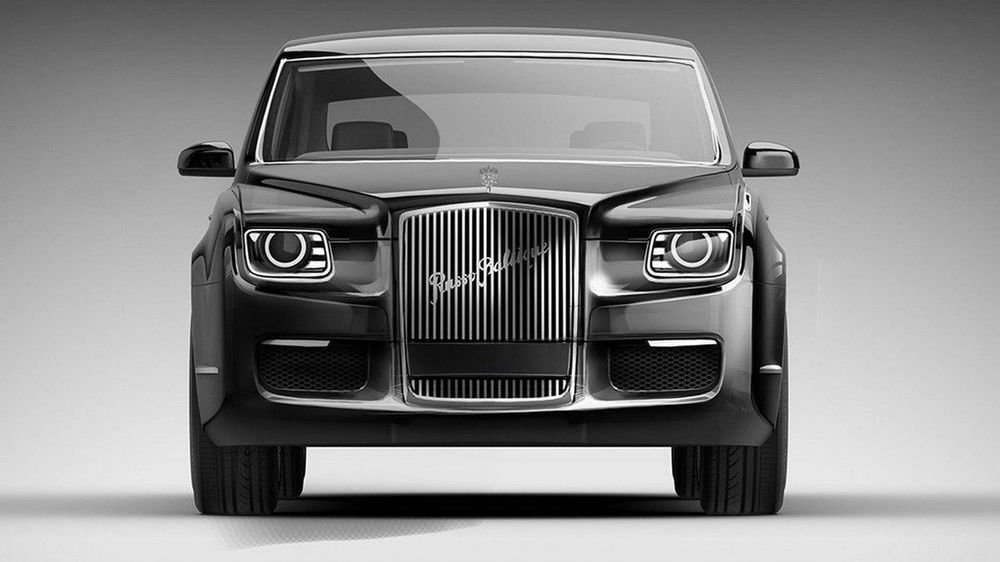

Vladimir Putin's New Limo Is 592bhp Of Armoured Russian Excess
Presidential limousines are usually a bit excessive by their very nature, but Russia's latest are completely custom-built with Porsche and Bosch

It’s part of Presidential privilege that you can be a bit silly when it comes to specifying your car, but it looks like Vladimir Putin has won this round: check out the entirely bespoke creation that will soon be the primary transport for the most important man in Russia.
This isn’t an existing car. It uses a 4.6-litre turbocharged Porsche engine with 592bhp and 650lb ft of torque, but otherwise it’s apparently an entirely bespoke project designed and specified by the Russian government in tandem with Porsche and Bosch. Stick that in your Cadillac truck-based pipe and smoke it, President Trump.

The whole thing is rumoured to have cost around £85 million to develop, although that cost covers the price of building other body styles, too. There’s said to be a range incoming, from a saloon to an MPV and even an SUV.
Details on how it’s kitted out are naturally a little thin on the ground. It’s called the Cortege project and uses as few non-Russian parts as possible. Even the heavy-duty automatic gearbox attached to the German engine is a Russian-made nine-speeder.

The vaguely Mercedes-ish, vaguely Rolls-Royce-ish limo is certain to have inches of armour plate, most likely a closed, purified air supply and various means of communication designed to function even in an Armageddon scenario. it’s also likely to weigh about as much as Moscow.
But does it have a coffee machine, or a shagpile topper for the dashboard? If not, we’re just not interested.
Related Posts

Jaguar Has Killed Off The Supercharged V6 XE And XF

You're Probably Not Having As Bad A Day As This Aston Martin DBS Owner

US Car Makers Want To Make Premium Petrol The New Minimum

This Unique 1967 Corvette L88 Is The US Legend You Can’t Drive

This Dodge Demon Isn't So Handsome After Hitting Parked Cars

Fredric Aasbo's New Ride Is A 1000bhp Toyota Auris Drift Machine